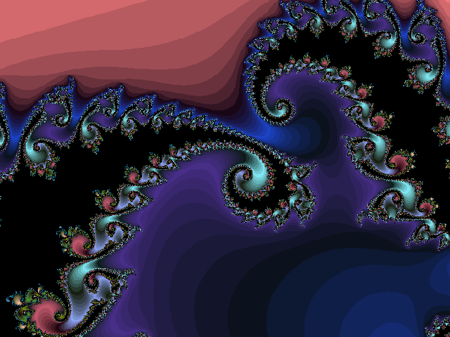

Although I find Statistics pretty ez, I would still say that I hate it. To quote Evan Esar, Stats is the "science of producing unreliable facts from reliable figures". Nonetheless, I see the importance of the topic, and so can tolerate it. My favourite topic, hands down, is geometry. I love fractals, they're like the logic of Maths coupled with the trippiness of patterns.
On the other hand, I do quite like the neatness of differentiation, especially when involved in kinematics. Definite integration is also pretty clever, and, although presented as harder, is much quicker to do than with the trapezium rule.